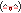

My Writing
I grew up blessed with a librarian mom, so I always loved to read and therefore also to write. I obviously started writing in my native language (German) but started writing in English as soon as I could (age 14) and never went back to German! I sometimes write original fiction, but mostly I write fanfictions.  I am planning my first novel, a love story about a trouple in the late 70s! I have published one short horror story in an online literary magazine, but I can't link to it here because it is credited to my full name, which I don't want y'all strangers to know!
My Favorite Things about Writing
- literally creating a world that doesn't exist
- when the characters just start doing stuff on their own
- "whoops i just wrote x thousand words"
- using language to describe abstract concepts
- witty dialogue that makes my friends go "haha"
- wonderful comments from readers
- boasting about the word count
- using a new word i just learned
Word Count
I used to have this stupid goal of writing at least 5,000 words per month. I don't always manage. Here's how much I wrote in the past year!
 Here's how much I wrote in the
past year!
Here's how much I wrote in the
past year!
Comments
I'd like to think that I'm not bad at writing. But don't take my word for it, read these lovely comments I've gotten on my fanfictions:
- 10/10!!!! I REPEAT, 10/10!!!!! This was amazing!!!! I LOVED every bit of it!!!! Thank you so much!!!!! <3 <3 <3 <3 <3 I just.... Everyone was so spot on and its just amazing. If you go back and look at any given sentence or paragraph just assume I was having the time of my life reading every bit of it!!!!
- BHDHDBANAKF THIS FIC IS ACTUALLY SO GOOD it is going to be living in my head rent free forever omg
- But I’m not ready for it to be over :(((
- [...] I need this ! It's so great written and I literally have like the most personal connection to ░░░░░ 's character because I'm also polyamours and this is how I felt when I like two of my online friends also... I don't know how to say this, but stories like this make me so happy- because people work hard on writing things that hopefully make them happy :)! Also this is such a good written romance book, because it doesn't just show all the love and romance stuff but it actually shows how someone that is questioning their sexuality in two different ways... are gonna have ups and downs towards it :] Hope you like my very much NOT/MAYBE/VERY? needed love towards your wonderful story :) Yours truly beloved reader, ░░░░░ [...] :) thank you for writing such a lovely story and I can't wait to read more ...
- I LOVE your characterisations, they seem very real and nuanced. The friendship, the way they communicate, the foundation of trust are all chefs kiss.
- OMG idk if you're still checking comments on this so late but this was BEAUTIFUL from start to finish! I downloaded it to read in the car while I was driving home, and it was such a ride and just all the soft feelings and all the soft moments
- Read this to my gf, she's literally crying tears of joy rn.
- Should I have started this at 2 am? Probably not. Is it now 3:45 and I have no regrets? Yes
- This has moved its way to the top of my favorite ░░░░░ fics and I plan on revisiting it many, many times as there is so much goodness here to get lost it. There is so much I want to comment on (line by line, honestly) but I will say for now that you have really mastered "them"---their voices, their mannerisms [...]. It felt wildly "in character" for lack of a better phrase.
- THIS LINE RIGHT HERE YOUR HONOUR IS WHAT BROKE ME
- WHAT?!?! That’s the ending???? Noooooooooooooooooooo!!!!! I’m so sad! This story was incredible and awesome and AMAZING!!! I never wanted it to end!!! You did such a good job! AHHHHHHHHHHHHHHHHHHH!!!
- Okay, this may sound weird, but talking about how you realize that you realize you love someone’s masculinity just as much as you love their femininity feels like such a queer/bisexual experience. I was sitting there like "omg. That’s so true. I think about women’s feminine features the way ░░░░░ is thinking about ░░░░░’ masculine features. That’s wild." Just know that your writing makes people reflect on their own relationship with their sexuality in such a positive way. That is incredible skill, and it shows how thoughtful you are as a writer. Applause. In fact, several rounds of applause.
- This is insanity-inducing in the best way <3 write moooooore ░░░░░ fic I'm desperate
- I could hear their voices and see it so perfectly 🥹
Make sure to tell the author of your next fave fanfic that they're amazing - - it really does make all the difference!